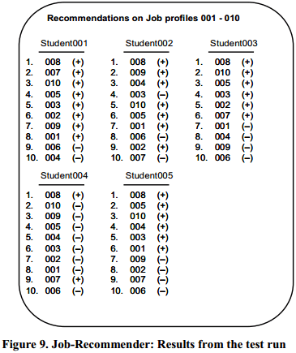

0. 概要
本文给出了一个新的person-jobs fit（P-J）推荐方法，这个新方法融合了两个不同的推荐系统。
本文还根据一个学生实验的数据来测试了这个新推荐方法。
1. 简介
(1) 一些研究者致力于融合了基于内容推荐和基于协同过滤推荐，以同时获得两者的优点和克服稀疏性问题；还有研究者致力于降低协同过滤中“用户-物品矩阵”的维度。
(2) 本文的研究是基于已有理论和之前的研究结果，并以具体求职环境为出发点。
2. 当前求职环境的情况（2003-2004）
从上图可发现存在的问题是：职位的发布和寻找存在差额，求职市场的信息具有不对称的情况。
3. 从个人出发的个性化职位搜寻
3.1. 推荐一个人所需要掌握的信息
求职者&他的能力所能完成的任务的匹配；
求职者&能与他成功合作的人的匹配。
(1) P-E fit理论及其基石——Lewin的理论
| 缩写 | 含义 |
|---|---|
| P-J fit | person-jobs |
| P-E fit | person-environment |
| P-O fit | person-organization |
| P-V fit | person-vocation |
| P-G fit | person-group |
1) 很多职业心理学、招聘、选举研究和管理研究都研究过P-E fit框架。P-E fit在所有fit中居首要地位，其框架内的理论成果可应用于其它的fit。
2) Lewin的理论：行为就是人的功能属性，也是人所处的环境。
由此可知：行为或态度之间的差异并不是人或环境决定的，而是个性（characteristics）间的互动决定的。
所以，P-E fit框架就定义了个人的个性和环境的个性的一致性程度，这个程度值一般都设为一个很大的值，即一致性很强。
(2) P-E fit概念的三种理解
a. Supplementary fit和Complementary fit
前者是某个环境中存在同等地位的相似的个人个性；
后者是某个环境只由一个人的个性来影响。
这两者分别对应两种不同定义的“环境”：一种是基于栖息于该环境中的人的定义，另一种是把环境则当作人的一部分。
b. Needs-supplies和Demands-abilities
前者包含了对个人需求、喜好和环境的供应之间的fit；
后者则包含个人能力、环境的需求之间的fit。
c. Perceived fit（subjective）和Actual fit（objective）
前者是指通过主观感觉的fit；
后者是指通过客观计算的fit。
目前的研究表明P-E fit的理解应该结合以上三种理解层次，而不应该分开单独理解（这样会导致理解片面，如下图）。
(3) 依样画葫芦的P-J fit
接下来就是本论文提出的理论——P-Jfit。P-J fit是根据P-E fit框架的定义方式来定义的。
1) P-J fit包含了person和jobs fit的两种层次的理解
a. Employee’s desires和Job supplies
b. Job demands和employee’s abilities
2) P-J fit最大的特点就是互惠性，它不是一个单边选择。所以本论文的P-J fit框架基于以下两个基础：
a. 职位推荐是一个互惠双边过程，必须同时考虑双方的标准。
b. 每个求职者只会被推荐一次，这个推荐会基于一个评级系统，择最优而推荐。
3.2. 求职者-职位匹配
对于职位双向推荐系统，本文把它拆分成了两个子系统模型：CV-recommender和Job-recommender，二者都式Probabilistic Latent Aspect Model。
(1) CV-recommender模型
X：招聘者和职位描述
Z：属性值的潜在影响因素（latent aspect）
V={“qualified”,”notqualified”}
a：一个四元的集合，元素就是求职者资料中的项目。
使用ExpectationMaximization algorithm（EM算法：最大期望算法）就可以得出求职者y对于职位x的合适概率（用v来衡量）。
(2) Job-recommender模型
y：求职者
z：属性值的潜在影响因素（latent aspect）
v={“fits to mypreferences”|”does not fit to my preferences”}
x：目标职位描述
使用ExpectationMaximization algorithm（EM算法：最大期望算法）就可以得出职位x对于求职者y的合适概率（用v来衡量）。
4. 实验与结果
实验形式：分两个阶段。
实验对象：32名来自两所德国大学的学生组成的一个研讨会组，专业从经济工管专业到经济学教育专业，所有学生都是距毕业一年。
实验步骤：
a. 第一阶段。收集所有学生的简历。
b. 把简历数据筛选、整理成一种结构化的数字格式。并设计一个网络接口，使这些数据可以以web端表格的形式被访问或完善。（筛选出来的数据项模仿主流求职网站的数据模式）
c. 第二阶段。研究人员从德国求职门户网找了100个真实职位给这些学生（为了职位多样性，这100个职位涵盖了经管学里的11个子领域，并且这些职位都是随机选取的，条件只有两个：全职、在德国境内）。
d. 研究人员要求学生们给这些职位打分，分值从1到5。评分要求是：不要考虑职位描述中的应聘标准，只看其中有没有提到有关求职者中长期职业生涯的东西。最终的评分会被用在Job-recommender中。
| 需要的数据 |
|---|
| 人口学数据 |
| 教育数据 |
| 工作经验 |
| 语言能力 |
| IT能力 |
| 奖励、学位或论文发表等 |
4.1. “学生实验”的结果
(1) 预测结果评估手段：Mean Absolute Error（MAE，平均绝对误差）或Root Mean Squared Error（RMSE）
本论文采用MAE预测结果进行评估。
Pa：预测值集合。
pa,j：j的预测值。
va,j：j的真实值。
ma：总的评估次数。
(2) CV-recommender系统的实验结果
CV-recommender模型在001~005号职位中随机选取10位学生（共50个评分）用于预测结果的评估，其余职位的评分用于模型训练。
如上图列表，job001~005中列出了训练后的模型对001~005给出的top10推荐（每个职位推荐前10名最佳求职者）。对于每个求职者，若他给出的评分为4或5，则在后面画“+”，若为1或2或3，则在后面画“-”。
可以看出，job1、2、4的推荐顺序是符合事实的，job4、5则稍有偏差，但也非常接近事实。
使用MAE来评估模型的预测结果：

由上图可知，MAE能很好地反映稀疏程度（MAE越低，稀疏程度越低，预测结果越准确）。
(3) Job-recommender系统的实验结果

使用MAE来平均模型的预测结果：
此实验步骤与结果与CV-recommender模型相似，不再赘述。
4.2. 把两个子系统合二为一的尝试
互惠推荐的重点在于：只用一个独立的系统，在两个集合中，同时考虑到两方的情况，从而为其中一个集合中的一个元素推荐另一个集合中最合适的一个元素。
对此，本文作者提出了三种可能的办法：
a. 把互惠推荐模型当成一个社会福利最大化问题模型来处理。
b. 降低互惠推荐模型的责任，把它假定为对单个对象的最大化，这样就忽略了其它对象潜在的可能性。这个办法最终产生的结果几乎不可靠。
c. 用离散的观点去近似模拟帕累托最优问题（pareto-optimal）。
作者表示会更进一步探索结合两个子系统的问题。
5. 结语
在这篇文章中：
a. 作者为互惠推荐提出了两个子系统，并开展实验验证了这两个子系统的可靠性；
b. 然后，作者阐明了他为整合两个子系统作出的三种尝试，并表示未来开展更多的测试实验和验证项目；
c. 此外作者还希望能把系统拓展到人际推荐领域。